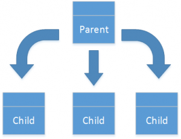

Budget planning data allocation
This topic describes the allocation methods that are available in Microsoft Dynamics 365 Finance and how they can be used.
You can distribute the data in a budget plan in a number of ways to accurately portray the projected amounts.
Allocation methods
Three allocation methods (Allocate across periods, Allocate to dimensions, and Use ledger allocation rules) can create budget plan lines that are based on lines in the same budget plan. Three other methods (Aggregate, Distribute, and Copy from budget plan) can create budget plan lines in other budget plans. For all six allocation methods, you specify the destination scenario. The destination scenario can be either the same as the source scenario or different from the source scenario. Additionally, you can specify whether new lines are appended to the budget plan or replace the current lines in the budget plan.
Note
A unique scenario should be used for aggregation that is different from the scenario that was used for distribution or other modifications that were previously performed in the parent plan.
 Allocate across periods – A period allocation category is used to allocate the budget plan lines from the source budget plan scenario across periods in the destination scenario. The source amount is assigned to multiple lines in the destination scenario, based on the percentage and date that are defined in the period allocation category.
Allocate across periods – A period allocation category is used to allocate the budget plan lines from the source budget plan scenario across periods in the destination scenario. The source amount is assigned to multiple lines in the destination scenario, based on the percentage and date that are defined in the period allocation category.
Allocate to dimensions – The budget plan lines are allocated from the source budget planning scenario to one or more lines in the destination scenario, based on the percentages and financial dimensions that are defined in a selected budget allocation term.
{kind=link}
 Aggregate – The budget plan lines are aggregated from the source budget plan scenario in the associated (child) budget plans to the destination scenario in the parent budget plan. This method enables budget amounts that are prepared at a lower level in the organization to be consolidated at a higher level.
Aggregate – The budget plan lines are aggregated from the source budget plan scenario in the associated (child) budget plans to the destination scenario in the parent budget plan. This method enables budget amounts that are prepared at a lower level in the organization to be consolidated at a higher level.
 Distribute – The budget plan lines are distributed from the source budget planning scenario in the parent budget plan to the destination scenario in the associated (child) budget plans, based on the financial dimensions of the organization units of the associated plans. This method enables budget amounts that are prepared at a higher level in the organization to be spread out for more localized review.
{kind=link}
 Use ledger allocation rules – The budget plan lines are distributed from the source budget planning scenario to the destination scenario, based on the ledger allocation rule that is selected.
Use ledger allocation rules – The budget plan lines are distributed from the source budget planning scenario to the destination scenario, based on the ledger allocation rule that is selected.
 Copy from budget plan – As in the Distribute allocation method, budget plan lines are created in the destination, based on lines in a related budget plan. However, for this method, the source budget plan doesn't have to be the parent but can be at any higher level in the budget plan hierarchy. This allocation method is useful if consolidated amounts are originally budgeted at a much higher level, and must be transferred to a lower level of the organization for detailed review and adjustment before they can receive upper-level approval.
Copy from budget plan – As in the Distribute allocation method, budget plan lines are created in the destination, based on lines in a related budget plan. However, for this method, the source budget plan doesn't have to be the parent but can be at any higher level in the budget plan hierarchy. This allocation method is useful if consolidated amounts are originally budgeted at a much higher level, and must be transferred to a lower level of the organization for detailed review and adjustment before they can receive upper-level approval.
Using allocation methods in a budget plan
To perform allocations on the budget plan page, select the lines to allocate, and then click Allocate budget.

Next, select an allocation method. The remaining fields are then set, based on the method that you selected. These fields include the source and destination of the budget plan data, and an option that lets you multiply the source by a specified factor when the destination amounts are created, to simplify bulk adjustment. You can also set the Append to plan option. Select No to replace the existing budget plan lines, or select Yes to retain the existing budget plan lines and add new lines for the allocated amounts.
Automating allocations during a workflow
One powerful feature enables allocations to be performed automatically as part of a budget planning workflow. As a budget plan moves through its workflow, automated tasks can invoke an allocation at a specified budget planning stage.
To set up automated allocation, you must first create an allocation schedule on the Budget planning configuration page. The allocation schedule defines the allocation method that will be used when the automated allocation is run, and the values of the various allocation options (see the previous section for descriptions).
Next, you create a stage allocation on the Budget planning configuration page. The stage allocation assigns an allocation schedule to the budget planning workflow and stage.
Finally, add an automated task for budget planning stage allocation at the desired workflow stage. In the following example, two budget planning stage allocations (outlined in red) have been inserted into the workflow.